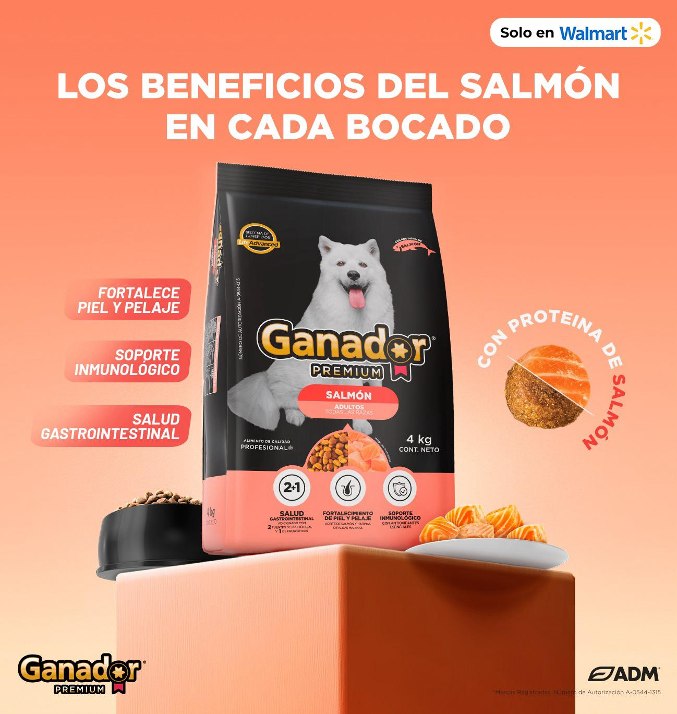

- Ganador® Premium presenta su nuevo alimento para perros adultos con proteína de salmón. Esta innovadora receta, enriquecida con ácidos grasos Omega-3, está diseñada para promover una piel y un pelaje saludables. Además, incluye otros ingredientes funcionales que favorecen la salud intestinal y refuerzan el sistema inmunológico de tu mejor amigo, brindándole una nutrición completa y balanceada.
- El nuevo Ganador® Premium Salmón se encuentra ya disponible en las principales tiendas de autoservicio, en presentaciones de 4 y 10 kilos.
Ciudad de México - Ganador® la marca experta en nutrición para perros ha anunciado el lanzamiento de Ganador® Premium Salmón, una proteína que se ha vuelto muy popular entre los dueños de mascotas gracias a sus grandes beneficios. 
Ganador® Premium Salmón llega en forma de alimento seco (croquetas) para perros adultos, elaborado por expertos nutricionistas veterinarios con ingredientes de la más alta calidad. El salmón, al ser una proteína rica en ácidos grasos como el Omega-3, ayuda a la salud cerebral y apoya el mantenimiento de piel y pelo saludable. Además, el salmón es una excelente fuente de vitamina A, vitamina D, varias vitaminas del grupo B, potasio, magnesio y zinc.
“La alimentación en canes es un factor que afecta directamente la calidad y longevidad de su vida. La inclusión de proteínas novedosas como el salmón, junto con otros ingredientes funcionales como prebióticos y probióticos para la salud intestinal, así como antioxidantes para el soporte inmunológico, hacen que la dieta no solo sea fácil de digerir, sino también nutricionalmente completa, apoyando la salud general de los perros a lo largo de su vida. El lanzamiento de Ganador® Premium Salmón es, por tanto, un ejemplo de cómo la innovación en la alimentación canina puede beneficiar la calidad de vida de los perros”, comentó el especialista médico veterinario de ADM, Ricardo Javier Rodríguez Corral, durante el evento de lanzamiento de Ganador® Premium Salmón.
El salmón en los alimentos para mascotas contiene múltiples beneficios que ayudará a que se mantengan saludables, entre los cuales se destacan:
- Proteína de Alta Calidad: El salmón es una fuente proteica y rica en ácidos grasos Omega-3, vitaminas del complejo B, vitamina A, D, E, K, C, y minerales como hierro, yodo, selenio, entre otros.
- Fortalece piel y pelaje: Con ingredientes como aceite de salmón y algas marinas que promueven una piel sana y un pelaje brillante.
- Salud Gastrointestinal: Adicionado con dos fuentes de Prebióticos: Manano-oligosacáridos (MOS), fructo-oligosacaridos (FOS) y Probióticos: Bacillus amyloliquefaciens, que ayudarán a mejorar la salud digestiva y que facilitan la absorción de nutrientes.
- Fortalecimiento del sistema inmune: Con las vitaminas, minerales y antioxidantes esenciales para fortalecer su sistema inmunológico.
La inclusión de la proteína de salmón dentro del portafolio de Ganador® Premium ayuda a diversificar la variedad de opciones que existen en el mercado.
"Nuestro compromiso es siempre ofrecer lo mejor para las mascotas y sus dueños, Ganador® es una marca que escucha a sus consumidores y por ello estamos muy emocionados de lanzar un producto que ha sido muy solicitado como lo es Ganador® Premium Salmón, el cual garantizamos va a satisfacer las necesidades nutricionales de sus perros, además de que les proporcionará un sabor que amarán" afirmó Ana Gabriela Aguilar Marketing Grouper de Ganador® durante el evento de lanzamiento.
Ganador® Premium Salmón no solo promete conquistar el paladar de los amigos peludos, también ofrece ventajas nutricionales. Una dieta rica en nutrientes como el salmón puede contribuir a una vida más larga y saludable para los perros.
El nuevo Ganador® Premium Salmón se encuentra ya disponible para perros adultos de todas las razas en las principales tiendas de autoservicio como Walmart, en presentaciones de costales de alimento seco de 4 y 10 kilos.
Acerca de Ganador®
Ganador es una marca de Archer Daniels Midland (ADM), líder mundial en nutrición animal.
Elaborada bajo los más altos estándares de calidad, ofrece una línea completa de
alimento seco, húmedo y snacks para perro, en todas las etapas de su vida y a través
de una oferta para todos los segmentos de mercado desde alimento básico hasta
alimentación premium, la cual se vende en tiendas de autoservicio y canal
tradicional en todo el territorio nacional, así como en las principales
plataformas online. Para más información, visita ganador.com.mx
Acerca de ADM®
En ADM®, liberamos el poder de la naturaleza para proporcionar acceso a la nutrición
en todo el mundo. Con innovaciones avanzadas en la industria, una cartera
completa de ingredientes y soluciones para satisfacer cualquier gusto, y
un compromiso con la sostenibilidad, brindamos a los clientes una ventaja
para resolver los desafíos nutricionales de hoy y del mañana. Somos un líder
mundial en nutrición humana y animal y la principal compañía de origen y
procesamiento agrícola del mundo. Nuestra amplitud, profundidad, conocimientos,
instalaciones y experiencia en logística nos brindan capacidades incomparables
para satisfacer las necesidades de alimentos, bebidas, salud y bienestar, y más.
Desde la semilla de la idea hasta el resultado de la solución, enriquecemos la
calidad de vida en todo el mundo. Obtenga más información en www.adm.com